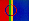
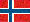
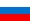
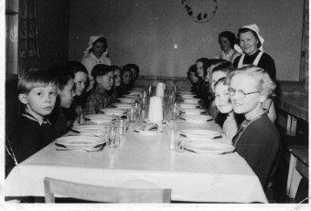
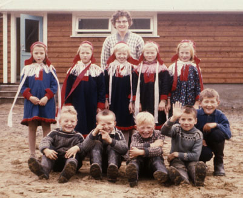
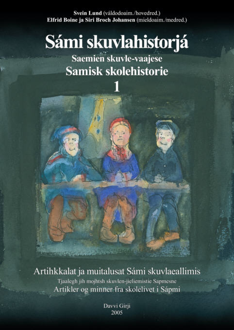
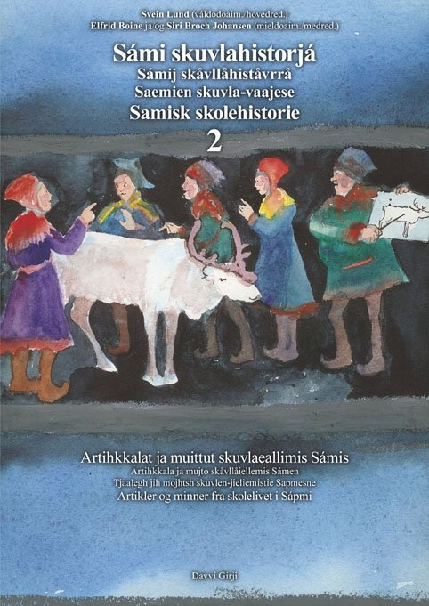
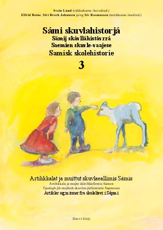
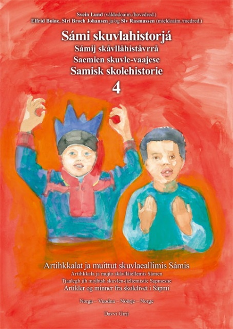

 Sámegillii  På norsk Suomeksi In English  На русском
|  Саамская школа в Hattfjelldal, Nordland. Обед в интернате, 1953 (Фото: Sigrid Bergli Sørnes) |
История саамской школыSámi skuvlahistorjáSami school history |  Школа в Skoganvarre, Porsanger, осень 1962. 2-й и 3-й классы с преподавателем Birgit Bergh. (Фото: Richard Bergh) |
- Саамский язык являлся языком преподавания уже более 300 лет назад.
- Позднее власти Норвегии, Швеции, Финляндии и России использовали школу в целях искоренения саамского языка, и почти достигли своей цели.
- Некоторые учителя преподавали саамский язык вопреки инструкциям.
- В то же время некоторые саамские учителя запрещали ученикам разговаривать на родном саамском языке.
- Норвежские учителя в 50-х годах назвали такую языковую политику "преступлением против детей".
- Саамские колледжи и профессиональные центры давали образование саамам уже с 1943 года.
- В 50-х годах существовало профессиональное обучение с саамским содержанием и с предметом саамский язык, но впоследствии оно прекратило свое существование.
Об этом и о многом другом Вы можете узнать в проекте История саамской школы.
|  |  | Sámi skuvlahistorjá 1-3 /
Книги вышли на саамском и норвежском языках. В каждой книге примерно 450 страниц, стоимость одной книги 395 NOK (норв.крон). |  |  |
История саамской школы - это книги и проект в Интернете, начатые в 2003 году и существующие уже несколько лет. Изданы 4 книги в Норвегии (2005, 2007, 2009, 2010) и запланированы еще две. К работе над историей саамской школы в Швеции, Финляндии и России приступили в январе 2010. Начальной целью является публикация одной книги в каждой из стран в 2011 и 2012 годах.
Здесь можно ознакомиться с подробным описанием проекта.
Если Вы желаете принять участие в проекте, читайте приглашение.
Редакционная коллегия в Норвегии: Svein Lund, Elfrid Boine, Siri Broch Johansen, Siv Rasmussen
Редакционная коллегия в Швеции: Marit Anne Allas, Ylva Jannok-Nutti, Anna-Margith Påve, Laila Stenberg
Редакционная коллегия в Финляндии: Jenni Laiti, Pigga Keskitalo, Veli-Pekka Lehtola, Ulla Aikio-Puoskari
Книги выпущены издательством Davvi Girji, где над проектом работает Seija Guttorm.
Финансовую поддержку проекту оказали:
Норвегия: Fylkesmannen i Finnmark, Sametinget i Norge, Høgskolen i Tromsø, Høgskolen i Bodø, Norsk kulturråd, Fritt ord, Lærebokutvalget for høgere utdanning, Kåfjord kommune, Finnmark fylkeskommune, Troms fylkeskommune, Nord-Trøndelag fylkeskommune, Styret for de samiske videregående skolene, Norsk faglitterær forfatter- og oversetterforening og Arbeids- og inkluderingsdepartementet.
Швеция: Sametinget i Sverige